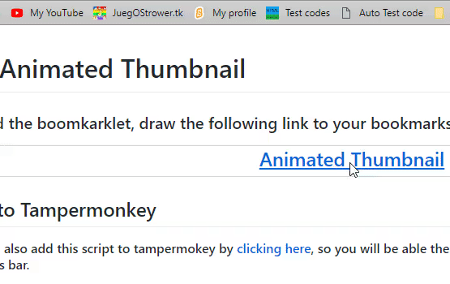

Scratch 2.0 Player
By
JuegOStrower
for
Scratch
To add the boomkarklet, draw the following link to your bookmarks bar:
Scratch 2.0 Player

Add to Tampermonkey
You can also add this script to tampermokey by
clicking here
, so you will be swap the player by clickng a bookmark.